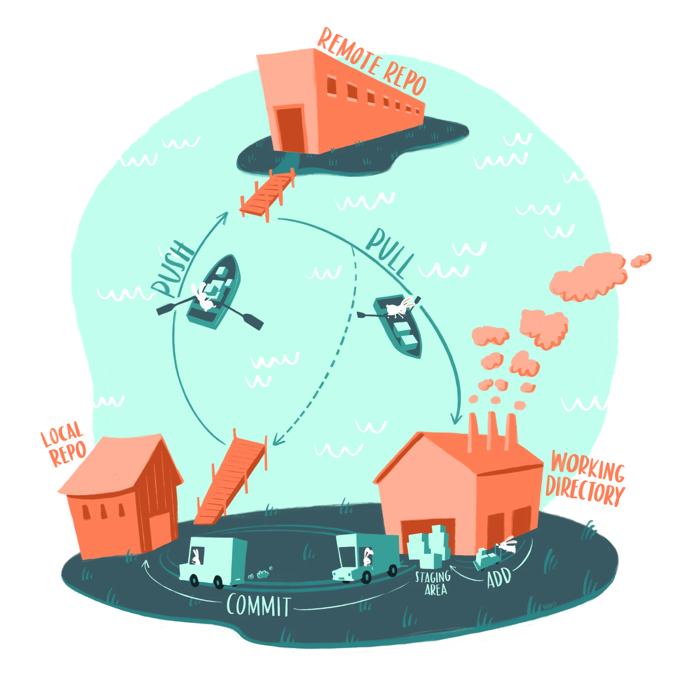

api_key <- Sys.getenv("QUALTRICS_API_KEY")15 Data sharing and version control
Before sharing any data, make sure it passes the checks in the chapter on Data privacy.
15.1 Version control with Git and GitHub
In the chapter on Structuring projects, you saw file names like analysis FINAL v2 (use this one).R. These are attempts to keep track of versions by hand, and they always fail eventually. Version control software does this job properly. It records every version of every file in a project, along with who changed it, when, and why, so there is only ever one analysis.qmd, and any earlier version can be recovered.
Learning version control is worth the effort for two reasons beyond this course:
- It’s a skill employers expect. Git is the standard tool for working with code in almost every field. If you want to work in a technical or semi-technical job, e.g., in data science, analytics, research, or software, you will very likely be expected to use it, and it’s often listed in job adverts. Learning it now, on your own projects, is a good investment.
- It makes for better science. Research increasingly depends on code, but most researchers are never taught the practices that software developers use to keep code organized, checked, and correct. In his talk Science as amateur software development, Prof. Richard McElreath argues that many of science’s problems with errors and reproducibility are the problems of amateur software development, and that tools like version control are part of the solution.
For an accessible argument for why researchers who analyze data should use version control, see Bryan (2018). For a tutorial written for psychologists, see Vuorre & Curley (2018). Allison Horst’s illustrations of Git and GitHub are a friendly introduction to the main ideas.
15.1.1 Git, GitHub, and GitHub Desktop
Three names are easy to confuse:
- Git is the version control software. It runs on your computer and keeps the history of a project folder.
- GitHub is a website that stores copies of Git projects online. It’s used to back up projects, to share them with collaborators, and to make them public, e.g., alongside a paper.
- GitHub Desktop is an app that lets you use Git and GitHub by pointing and clicking, rather than by typing commands.
Git has a reputation for being difficult, mostly because of its command-line interface and its jargon. For the things most researchers need, GitHub Desktop removes most of that difficulty, so it’s what this chapter uses.
A few terms are needed even with GitHub Desktop:
| Term | Meaning |
|---|---|
| Repository (repo) | A project folder whose history is tracked by Git. Your psych-DS-ish project folder becomes a repository. |
| Commit | A saved snapshot of the project, with a short message describing what changed. |
| Diff | The differences between two versions of a file, i.e., the lines that were added and removed. |
| Push | Send your new commits from your computer to GitHub. |
| Pull | Get new commits from GitHub onto your computer, e.g., ones made by a collaborator. |
| Clone | Download a copy of a repository from GitHub, including its history. |
| Local / remote | The copy of the repository on your computer / the copy on GitHub. |
The illustration below shows how these fit together. You work on files in your project folder (the working directory). You choose which changed files to include in the next commit (add them to the staging area; in GitHub Desktop, this is done by ticking them), then commit them to the history on your computer (the local repo). Push sends your commits to GitHub (the remote repo), and pull brings other people’s commits back.

Illustration from the Openscapes blog GitHub for supporting, reusing, contributing, and failing safely by Allison Horst and Julia Lowndes.
15.1.2 Setting up
- Create a free account on github.com. Students and researchers can also apply for GitHub Education, which adds free extras.
- Download and install GitHub Desktop.
- Open GitHub Desktop and sign in with your GitHub account. If you skipped this when it first opened, you can sign in later in the app’s settings (GitHub Desktop > Settings > Accounts on Mac, File > Options > Accounts on Windows).
- When asked to configure Git, use the name and email address you’d like to be shown on your commits.
GitHub Desktop includes its own copy of Git, so you don’t need to install Git separately.
15.1.3 Putting a project under version control
The easiest way to start is with a project created by {psychdsish}, as in the chapter on Structuring projects, because it already contains a README, a licence, and a .gitignore file.
- In GitHub Desktop, use File > Add local repository and choose your project folder.
- Because the folder isn’t a Git repository yet, GitHub Desktop will say so and offer to create a repository there instead. Click that option. The project already has a README, a licence, and a
.gitignorefile, so leave those options empty or unticked, then create the repository. - Click Publish repository to create a copy of the project on GitHub. Keep Keep this code private ticked. You can make the repository public later, once you’ve checked that it contains nothing that shouldn’t be shared (see Keeping private things out of GitHub below).
15.1.4 The everyday workflow
Once the repository is set up, working with it follows the same cycle every time:
- Work as normal. Edit your code in RStudio, render it, and save your files. Git doesn’t change how you work with your files.
- Review your changes. GitHub Desktop’s Changes tab lists every file that has changed since the last commit, and shows the diff of the selected file: removed lines in red, added lines in green. Read through them. This is your chance to notice a file that shouldn’t be there, e.g., an identifiable data file.
- Commit. Tick the files you want to include, write a short summary of what you changed in the Summary box, e.g., “Exclude participants who failed the attention check”, and click Commit to main.
- Push. Click Push origin to send your commits to GitHub. Until you push, your commits exist only on your computer.
Commit whenever you’ve done something meaningful that works, e.g., finished a processing step or fixed a bug, rather than once at the end of the day. Small commits with clear messages make it much easier to find when something changed, and to undo it.
Other things you’ll need:
- Looking back. The History tab lists every commit. Click one to see what changed in it.
- Undoing uncommitted changes. Right-click a file in the Changes tab and choose Discard changes to return it to the last committed version.
- Working on more than one computer, or with collaborators. Click Fetch origin, then Pull origin, before you start working, to get the latest commits from GitHub. If two people changed the same lines of the same file, Git can’t decide which version to keep and asks you to choose. This is called a merge conflict. GitHub Desktop will show you which files are affected. See its documentation for how to resolve them.
- Getting a copy of someone else’s project. Use File > Clone repository and paste the repository’s GitHub address.
15.1.5 Reading diffs
A diff shows exactly what changed in a file between two versions: removed lines are shown in red with a -, and added lines in green with a +. Unchanged lines around them are shown for context. You can see diffs in three places:
- In GitHub Desktop’s Changes tab, for changes you haven’t committed yet.
- In GitHub Desktop’s History tab, for any past commit.
- On GitHub, by clicking on a commit in the repository’s history.
Diffs are one of the most useful things version control gives you, because they show you what your code actually did rather than what you think it did:
- Catching unintended changes. You fix a typo in
processing.qmdand render the project. The diff of the processed data file shows that 40 rows disappeared. Without the diff, you probably wouldn’t have noticed. - Finding when something changed. If a result in your analysis changes, the history shows which commit changed it, and the diff shows how.
- Reviewing other people’s work. Before you accept a collaborator’s changes, the diff shows you every line they changed.
Diffs work line by line, so they work best for plain text files, e.g., .qmd, .R, .csv, and .md files. Git also stores every version of other files, e.g., .docx, .xlsx, .rds, and .pdf files, but it can’t show what changed inside them, only that something did. This is another reason to save data as .csv files rather than .xlsx files. Images are an exception: GitHub Desktop and GitHub can show the old and new versions of an image side by side, which is useful for checking how a change to your code changed a plot.
NoteUsing Git inside RStudio instead
RStudio has its own Git pane, which does the same things as GitHub Desktop: commit, push, pull, and view diffs and history. Some people prefer it because everything happens in one window. The disadvantage is that it takes more setup: you need to install Git separately and connect RStudio to GitHub with a personal access token. If you’d like to use it, see the setup chapters of Jenny Bryan’s Happy Git and GitHub for the useR, the Git chapter of An Introduction to R, or Vuorre & Curley (2018).
You don’t have to choose: both tools work with the same repository, so you can use whichever is open.
15.2 Keeping private things out of GitHub
Git remembers everything you commit, and GitHub shares it with anyone who can see the repository. This makes Git very good at keeping things, and very bad at forgetting them. The most important skill in this chapter is therefore making sure that private things are never committed in the first place.
15.2.1 The .gitignore file
A .gitignore file in the project’s main folder lists the files and folders that Git should ignore. Ignored files don’t appear in GitHub Desktop’s Changes tab, so they can’t be committed by accident. {psychdsish} projects come with a .gitignore that already ignores R’s temporary files, Quarto’s caches, and large output files.
Each line of a .gitignore is a pattern:
# lines starting with # are comments
# a specific file, in any folder
.Renviron
# a whole folder
data/private/
# every file ending in .sav
*.sav
# an exception: don't ignore this file
!data/raw/codebook.savComments must be on their own line: a # later in a line is treated as part of the pattern.
You can edit it in RStudio like any other text file, or in GitHub Desktop under Repository > Repository settings > Ignored files. You can also right-click a file in GitHub Desktop’s Changes tab and choose to ignore it, or all files with the same extension.
15.2.1.1 Seeing the .gitignore file
Files and folders whose names start with a dot, such as .gitignore and the .git folder where Git keeps the project’s history, are treated as hidden by some operating systems. If you can’t see them:
- macOS: in Finder, press Cmd + Shift + . (full stop) to show or hide hidden files.
- Windows: names starting with a dot aren’t hidden on Windows, so
.gitignoreis usually visible. The.gitfolder is hidden, though. To show it, in File Explorer choose View > Show > Hidden items (Windows 11) or tick Hidden items on the View tab (Windows 10). - Linux: in most file managers, press Ctrl + H.
- RStudio: the Files pane shows
.gitignore. To see all hidden files, click the gear icon (More) in the Files pane and choose Show Hidden Files.
Never delete or edit the contents of the .git folder by hand: it contains the project’s entire history.
15.2.1.2 Using .gitignore for private data
In the chapter on Data privacy, the recommendation was to keep identifiable data outside the project folder altogether. That is still the safest option. If you do need to keep private files inside the project, e.g., because a collaborator expects a particular folder layout, put them in one folder and ignore the whole folder:
data/private/.gitignore is a useful second line of defence, but it isn’t a safe place for private data on its own:
- It only stops new files from being tracked. If a file was committed before the rule was added, Git keeps tracking it, and it stays in the history.
- Mistakes fail silently. A typo in a pattern, or a file saved to a slightly different folder or with a different name, isn’t ignored, and nothing warns you.
- It only applies to Git. The folder can still be copied, zipped and emailed, or synced to a cloud service, with the private files inside it.
- It’s easy to commit everything without looking. Reviewing the Changes tab before every commit is what catches these mistakes.
15.2.2 Passwords and API keys: .Renviron files and GitHub secrets
Some code needs credentials, e.g., an API key to download data from Qualtrics or Prolific, or to use a large language model. Never write these into your code: once they are committed, anyone who can see the repository can use them.
In R, credentials are usually stored in a .Renviron file, which R reads when it starts. Each line sets an environment variable:
QUALTRICS_API_KEY=abc123yourkeyhereYour code then reads the value without ever containing it:
The easiest way to edit the file is with {usethis}. Restart R afterwards so that the changes take effect.
# a .Renviron file in your home folder, used by all your projects.
# this is outside every project folder, so it can't be committed by accident.
usethis::edit_r_environ()
# or: a .Renviron file in the project folder, used only by this project.
# add .Renviron to the project's .gitignore before you save anything in it!
usethis::edit_r_environ(scope = "project")The user-level file is safer, because it isn’t inside any repository. If you use a project-level file, check that .Renviron is listed in the project’s .gitignore before you put anything in it, because {psychdsish}’s default .gitignore doesn’t include it.
If you later automate tasks on GitHub itself, e.g., with GitHub Actions to render your project every time you push, the code running on GitHub can’t see your .Renviron file. GitHub has its own secure store for this, called secrets, under the repository’s Settings > Secrets and variables > Actions. Secrets can be used by your automated tasks, but their values are never shown once saved, even to you.
15.2.3 If you commit something by mistake
Deleting a file and committing the deletion removes it from the current version of the project, but not from its history. Every earlier commit still contains the file, and anyone with a copy of the repository can recover it. If the repository is public, or ever was, assume the file has been seen and copied.
If this happens, in order:
- Don’t panic, but act quickly. If the repository is public, make it private (on GitHub, Settings > General > Danger Zone > Change repository visibility).
- If it was a password or API key, revoke it and create a new one, e.g., in your Qualtrics account settings. This makes the leaked key useless, and is more reliable than trying to remove it from the history.
- If it was personal data, tell your supervisor and your institution’s data protection officer. Personal data being made public may count as a data breach, which institutions are legally required to handle, often within strict deadlines.
- Remove the file from the history. This means rewriting the history of the repository, which is possible with tools such as git-filter-repo, but it can’t be done in GitHub Desktop and it’s easy to get wrong. It also doesn’t affect copies of the repository that others have already cloned or forked, and GitHub may need to be asked to clear its cached copies. Follow GitHub’s guide to removing sensitive data from a repository carefully, and ask someone experienced for help. If the repository has no collaborators and no forks, it’s often simpler and safer to delete the GitHub repository, remove the
.gitfolder from your project, and start a new repository from the cleaned files, at the cost of losing the history.
These steps are slow, stressful, and not guaranteed to work. Keeping private files outside the project, and reviewing every commit, is much easier.
15.2.4 Further reading
- Jenny Bryan’s Happy Git and GitHub for the useR, the standard guide to using Git and GitHub with R and RStudio.
- The Git chapter of An Introduction to R, a walkthrough using RStudio’s Git pane.
- Week 3 of Pablo Mosteiro & Hanne Oberman’s course materials Markup Languages and Reproducible Programming in Statistics, which uses the command line and covers recovering from mistakes in more depth.
- The BES Guide to Reproducible Code chapter on version control.
- Urban Institute’s Git overview.
15.3 Zenodo
GitHub is a good place to share a project, but it isn’t designed to be a permanent scientific archive. GitHub is a company, repositories can be deleted or renamed by their owners at any time, and a link to a GitHub repository doesn’t say which version of the project a paper used.
Zenodo solves these problems. It’s a free repository for research outputs of all kinds, e.g., data, code, materials, and posters. It’s run by CERN, the European particle physics laboratory, stores its files in CERN’s data centre, and is funded by CERN and the European Commission. In other words, it’s public science infrastructure rather than a commercial service. Each upload gets a DOI, the same kind of permanent identifier that journal articles have, so it can be cited in a paper’s reference list.
Many psychologists have used the OSF for this purpose in the past. Zenodo is a good alternative, mainly because it works so well with GitHub: once the two are linked, archiving a version of your project takes a few clicks.
15.3.1 Linking a GitHub repository to Zenodo
- Log in to Zenodo with your GitHub account, or link your GitHub account to your existing Zenodo account.
- In Zenodo, open the menu under your profile and choose GitHub. Click Sync now, then find your repository in the list and turn on its switch. Only public repositories can be linked.
- On GitHub, create a release. A release is a named, fixed version of the repository, e.g., the version used for the submitted manuscript. On the repository’s main page, click Releases (to the right of the file list), then Draft a new release. Create a tag with a version number, e.g.,
v1.0.0, give the release a title, e.g., “Version submitted to journal”, and click Publish release.
Zenodo automatically saves a copy of the repository as it was at that release, creates a record for it, and gives it a DOI. Each later release gets a new version on Zenodo with its own DOI, e.g., one for the submitted version and one for the version after peer review. There is also one DOI that always points to the latest version, which is usually the one to cite in your paper.
Zenodo reads the title, authors, and other details for the record from the project’s CITATION.cff file, which {psychdsish} projects already include. Fill it in before your first release, and check the record on Zenodo afterwards.
Two things to be aware of:
- Zenodo pages aren’t nice to look at. A Zenodo record is a title, a list of files, and a download button, so you can’t browse the project the way you can on GitHub. That’s fine: GitHub is where people look at your project, and Zenodo is where it’s archived and cited. Link to each from the other, e.g., by adding the Zenodo DOI to your README.
- Zenodo records are permanent. Once a version is published, its files can’t be changed or deleted, except in exceptional cases. This is what makes Zenodo good for science, but it also means that a mistake can’t be undone, unlike on GitHub (see If you commit something by mistake). Check that the repository contains nothing private, as in the chapter on Data privacy, and that it has a licence, before you create a release.
15.4 Licensing
15.4.1 Why licences matter
Imagine you find a dataset on the OSF or Zenodo that’s perfect for your thesis. The authors have shared their data, code, and materials, but haven’t said anything about whether others may use them. Can you reanalyze the data and publish the results? Can you adapt their R code for your own project? Can you put one of their plots in a presentation? Should you email the authors to ask, and what do you do if they don’t reply?
Without a licence, the honest answer is that nobody knows. In most countries, copyright applies automatically to anything someone creates, whether or not they say so. Making something publicly visible is not the same as giving others permission to reuse it. Without a licence, others are left in limbo: some will reuse the work and hope for the best, and the most careful researchers, who are the ones you’d most like to build on your work, won’t use it at all.
A licence is a short, standard statement of what others may do with your work, and under which conditions. It solves the problem in advance: nobody needs to ask, and everyone knows where they stand. Sharing work without a licence is only half sharing it.
Licences are for work that you are sharing publicly. They give others permission to reuse what you’ve shared, so they only make sense for things that are safe to share in the first place. A licence doesn’t make data safe to share: first check it as in the chapter on Data privacy. Data that can’t be shared publicly, e.g., identifiable data, is instead shared under a data use agreement between institutions, which is a different thing.
15.4.2 Different licences for different things
A typical project contains three kinds of things, and they are usually licensed differently:
- Text and figures, e.g., the manuscript, the README, codebooks, and plots.
- Data.
- Code.
Licences are written with particular kinds of work in mind, so it matters which you use for which:
- Creative Commons (CC) licences were designed for creative and written work, and are the norm in academia for text, figures, and data. Most open access journal articles are published under CC BY, for example. The main variants are:
- CC BY: anyone may share and adapt the work for any purpose, as long as they give credit. This is the most common choice in research.
- CC0: no conditions at all; the work is placed as close to the public domain as the law allows. Popular for data, because it makes reuse and combining datasets as easy as possible. Researchers still cite datasets they use, because that is a norm of good scholarship rather than a legal requirement.
- CC BY-SA, CC BY-NC, and CC BY-ND add conditions: adaptations must use the same licence (ShareAlike), commercial use is not allowed (NonCommercial), or adaptations are not allowed (NoDerivatives). These are usually best avoided for research outputs. They make reuse harder, and ‘non-commercial’ is often unclear, e.g., is a researcher at a private company, or a paid textbook, commercial?
- Software licences were designed for code. Creative Commons themselves recommend against using CC licences for software, because they don’t deal with issues specific to code, such as warranties. The most common choices are:
- MIT: anyone may use, change, and share the code for any purpose, as long as the copyright notice and licence are kept. It also states that the code comes with no warranty. It’s short, simple, and very widely used.
- GPL: like MIT, but any software that includes your code must also be shared under the GPL (a copyleft licence). Common for R packages, but more restrictive than most research projects need.
- Apache 2.0: similar to MIT, with extra terms about patents.
If you aren’t sure, use the norms of academia:
| What | Licence |
|---|---|
| Text, figures, and data | CC BY 4.0 |
| Code | MIT |
choosealicense.com explains the main software licences in plain language, and the Creative Commons licence chooser does the same for CC licences.
A few more things to know:
- You can only license what you own. You can’t put a licence on someone else’s work, e.g., a copyrighted questionnaire you used, or images from the internet. Say clearly that these aren’t covered by your licence, or don’t share them.
- Check with your co-authors and your institution. Some institutions or funders have their own policies. Funders often require a particular licence for publications.
- Licences can’t be taken back. You can stop sharing something, but anyone who received it under an open licence can keep using it under that licence.
15.4.3 Adding licences to a project
A licence is usually added as a text file called LICENSE in the project’s main folder, which contains the full licence text. GitHub, the OSF, and Zenodo all display it.
{psychdsish} projects come with a LICENSE file containing CC BY 4.0, which covers the whole project, including the code. To use MIT for the code, as recommended above, say which licence covers what in the README, e.g.:
## License
The code in `code/` and `tools/` is licensed under the MIT License (see `LICENSE-CODE`).
All other content, including the data, text, and figures, is licensed under CC BY 4.0 (see `LICENSE`).{usethis} can write the MIT licence file for you. Run usethis::use_mit_license() from inside the project. It writes the licence to LICENSE.md and leaves the existing LICENSE file alone. Rename LICENSE.md to LICENSE-CODE, and replace the copyright holder at the top with your name(s).
The licence is also listed in the project’s CITATION.cff file, e.g., license: CC-BY-4.0, which is where Zenodo reads it from when it archives a GitHub release (see Zenodo above). If you use different licences for different parts of the project, list both, e.g., license: [CC-BY-4.0, MIT]. On the OSF, you can choose a licence in the project’s settings. Whichever service you use, check that it shows the same licences as your project files.